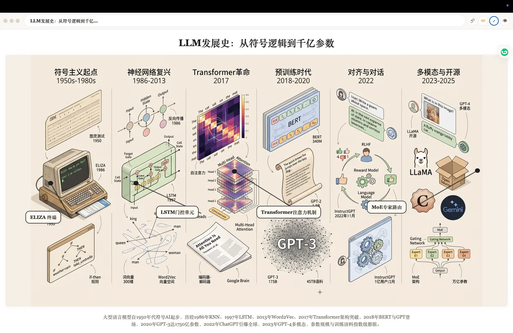
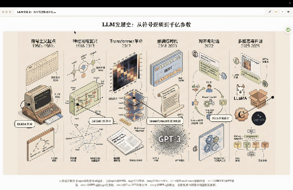
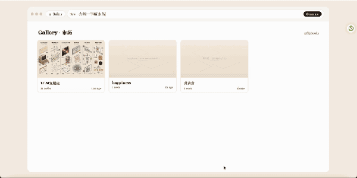

一句话判断：Flipbook Canvas 把静态 AI 生图变成了动态知识探索游戏——长按图片任意位置，系统识别内容、联网搜索、生成新的详细图解，层层递进成无限知识树。它是百科全书式的 AI 可视化工具，适合视觉化整理知识点或做演示。
来源 @GitHubDaily · 项目作者 imcuttle · Live: imcuttle.github.io/flipbook-app
Express + SSE 后端 + Vite + React + TS 前端，plug-in 多模型图像管道。
长按图片任意位置，系统执行一套完整的 AI 管道，生成子节点并链接回父节点。
每个功能都是独立模块，可组合使用。
长按（1秒）图片任意位置 → LLM 识别内容 → 联网搜索 → 生成新图解 → 层层递进。百科风格的 150–220 字 caption + 20–40 个图内标注。
节点标题 / caption / prompt 打字机式实时输出（SSE 流），点击瞬间 ID 就分配好——生成中也能分享链接，访客看到相同进度。
每张图上的文字（地名、日期、数字等）通过 Apple Vision OCR 识别，覆盖透明 HTML 层，拖选即可 Cmd-C 复制，完全不影响视觉。
每个节点 title + caption 合成语音（Microsoft Edge 免费神经语音），可选角色音，支持自动朗读，导出静态网站后仍可离线播放。
任意 canvas 可导出为静态 GitHub Pages 网站，带完整语音、图内可复制文字、全屏投影模式，不依赖服务器即可浏览。也有 read-only 分享链接。
来源：imcuttle/flipbook-app/docs/assets（MIT 许可）



文本规划 / 图像生成 / 网络搜索 / OCR / TTS，全部可替换为其他提供商。
| 能力 | 功能 | 默认实现 |
|---|---|---|
| 📝 LLM 规划 | 识别点击标签 · 决定是否搜索 · 生成 caption + prompt | codebuddy CLI（参考实现） |
| 🎨 图像生成 | 2752×1536 带标注图解 · 20–40 个 bake-in 标签 | SVG fallback + 图像模型（可插拔 OpenAI/Gemini/Seedream） |
| 🌐 网络搜索 | decide-then-search 门控：LLM 判断是否需要实时源 | 搜索后端 + 持久化到 DB / disk |
| 👁️ OCR | Apple Vision（zh-Hans + en-US）→ 透明 HTML 层 | 本地无需 API Key |
| 🔊 TTS | Microsoft Edge 神经语音 · 角色音切换 · 离线可用 | msedge-tts（免费，无需 Key） |
生产级可靠性设计，不是 Demo。
Flipbook Canvas 不只是"AI 生图工具"，它的边界取决于你怎么用它。
最终判断：Flipbook Canvas 的核心创新是把 AI 生图从静态终点变成了动态起点——每张图都是一个新的入口，层层点击形成无限延伸的知识树。
它的工程价值同样值得关注：SSE 流式生成 + 断线重连 + 并行子节点 + 可插拔多模态管道，这是一套可以迁移到其他 AI 应用的生产级架构。
但也要清醒：它不是一个通用工具，而是一个知识探索平台。适合那些愿意花时间构建自己知识网络的人，而不是只想快速出图的用户。
来源：x.com/i/status/2062889733131526324 · github.com/imcuttle/flipbook-app